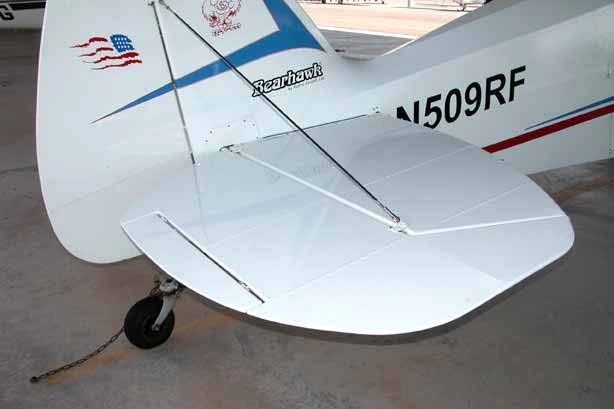

614 × 409 source pixels · Open original-size image ↗
Unknown · Bearhawk Factory
Tail surfaces after covering
A rear-oblique exterior view places the stabilizer, elevator, trim tab and brace wires together, useful for recognizing the finished relationships.
The photographed aircraft model is not identified. Use for local visual relationships only; verify applicability to the Companion.
- Builder / source
- Uncredited factory-manual example · Bearhawk / AviPro · Legacy Fuselage Manual
- Component
- Empennage / Tail Surfaces / Horizontal Stabilizer
- Stage / viewpoint
- Completed / Not recorded
- Classification / configuration
- UNKNOWN / Unknown
- Document / page
- BHManual-Fuselage1-25Rev1.pdf · PDF p13
- Original caption
- No unambiguous image-specific caption transcribed; see the source page.
- Original filename / directory
- Im18.jpg
BHManual-Fuselage1-25Rev1.pdf/page-13/Im18.jpg - Source link
- View original source ↗
- Tags
- overview, completed, legacy-kit
- Attribution
- Bearhawk / AviPro source attribution retained. Selected image extracted from the user-provided project manual; no general redistribution license asserted.
PHOTO REFERENCE ONLY — verify dimensions, hardware, and structural details against controlling Bearhawk documentation.